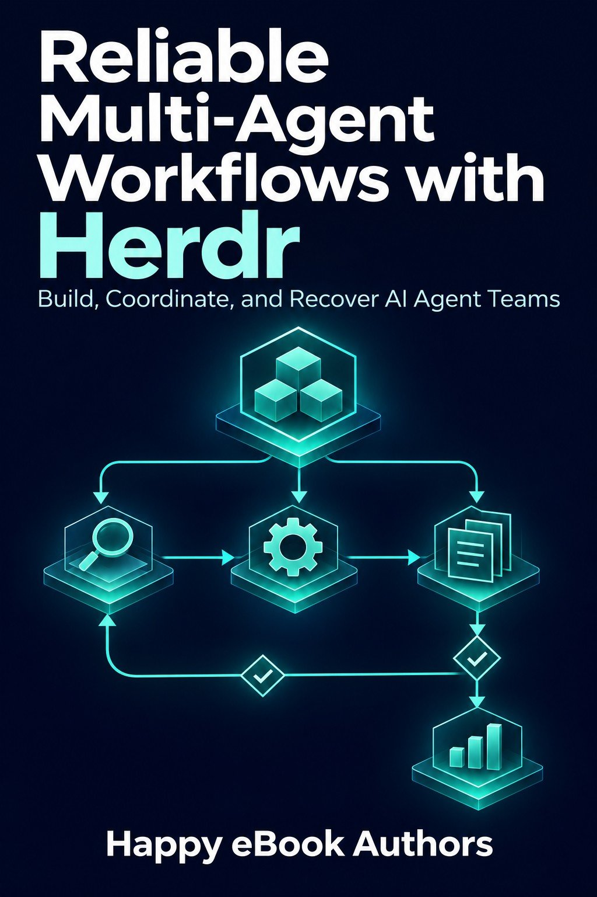

Reliable Multi-Agent Workflows with Herdr
Build, Coordinate, and Recover AI Agent Teams

Reliable Multi-Agent Workflows with Herdr
Build, Coordinate, and Recover AI Agent Teams
Build dependable AI agent teams with Herdr. This hands-on guide shows developers how to define task contracts, coordinate parallel roles, review code independently, preserve work across handoffs, and recover from failures. Work through ten practical chapters covering a Herdr TUI development environment, multi-agent task assignment, cross-review, shared memory, a five-agent website project, source-backed technical research, bounded automation pipelines, and persistent queues. Each chapter emphasizes observable acceptance: inspect the files, interfaces, tests, and evidence rather than relying on an agent's completion claim. The book includes a complete code-and-prompt appendix and companion English reader resources with runnable examples, role prompts, tests, a browser UI, and concise setup instructions. Download the public companion package without a GitHub login: https://github.com/t945935/herdr-multi-agent-reader-en/releases/tag/v1.0.0 Written for developers, technical educators, self-learners, and small teams with basic Python, terminal, JSON, and Git experience. Examples use Herdr TUI, Python, FastAPI, and SQLite. Tool versions evolve; verify commands in your own environment.